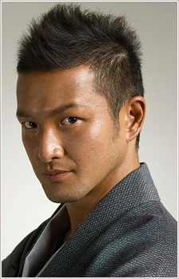
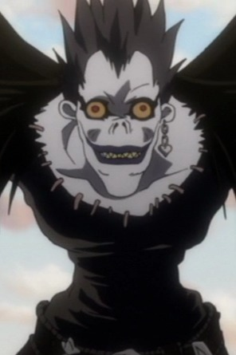

Shido Nakamura is a Japanese Kabuki and film actor. He madehis kabuki debut at the age of 8. Nakamura is well known for his role of Ryuk from Death Note.
- Gender: Male
- Birthday: September 14, 1972

|  |
Shido Nakamura is a Japanese Kabuki and film actor. He madehis kabuki debut at the age of 8. Nakamura is well known for his role of Ryuk from Death Note.
|
|---|
|  | Ryuk |
|
Ryuk is a Shinigami from the Shinigami World. He often refuses to aid Light and instead enjoys and watching him struggle for his goal. He is selfish and not a friend of Light. |